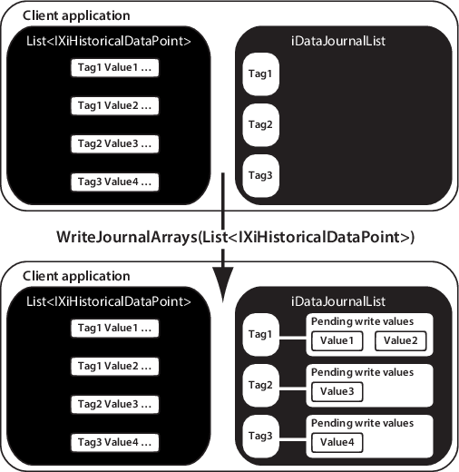
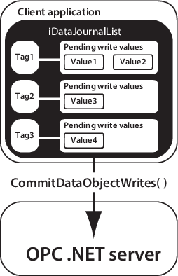

WriteJournalArrays method (C#)
To write a history samples into an existing history tag with a C# program, use the CreateTags method to create the history tag with a .HDE suffix. You must then initialize an iDataJournalList object, as illustrated in the following example:
// Create a new list for this insert process.
iDataJournalList = iContext.NewDataJournalList(1000, 1000, null);
// To insert, we need to be added to a write endpoint.
iDataJournalList.AddListToEndpoint(writeEndpoint);
// Select one sample from several which have the same tag so we do not attempt to add duplicate tags to the list.
List<HdeSampleRecord> distinctTags = m_HdeSamples.ToList<HdeSampleRecord>().GroupBy(p => p.file_hdeTagName).Select(g => g.First()).ToList();
// Add the items for the unique tags
foreach (HdeSampleRecord rec in distinctTags)
{
InstanceId myID = new InstanceId("", "", rec.file_hdeTagName);
iDataJournalList.AddNewDataObjectToDataJournalList(myID, true);
}
// Commit the items and see if there are any errors back from the OPC .NET server through Xi.
IEnumerable<IXiDataObjectBase> errorXiValues = iDataJournalList.CommitAddedElementsToServerList();
foreach (var xiValue in errorXiValues)
{
if (xiValue.ResultCodeTransaction != XiFaultCodes.S_OK)
{
string logMsg = string.Format("ERROR: Error {0} occurred when adding tag {1} to journal list",
xiValue.ResultCodeTransaction.ToString(), xiValue.InstanceId.ElementId);
Logging.Log(logMsg);
Console.WriteLine(logMsg);
}
}
For more details about initializing an iDataJournalList object, refer to the SampleDataWriterClient_CS sample client project for the OPC write interface.
public List<IXiHistoricalDataPoint> iDataJournalList.WriteJournalArrays (
List<IXiHistoricalDataPoint> Samples);
| Parameter | Description |
|---|---|
| Samples | A list of
IXiHistoricalDataPoint objects, representing the history samples to be inserted
in the DeltaV Continuous Historian database.
The IXiHistoricalDataPoint class is defined as follows: public interface IXiHistoricalDataPoint {
string PointTagName {get; set;} // Tag that the sample will be written to
DateTime UtcTime {get; set;} // Sample timestamp in UTC
Object PointDataValue {get; set;} // Float or string data value
uint PointOpcQuality {get; set;} //OPC quality value
WritePointType PointDataType {get; set;} // Data point type; see WritePointType below
uint PointResult {get; set;} // Sample's insert operation result
}
public enum WritePointType {
StringTypeData = 1,
FloatTypeData = 2,
DoubleTypedata = 3
}
|
Rules and operation
The WriteJournalArrays method does not write values to the DeltaV Continuous Historian database. As illustrated in the following diagram, the WriteJournalArrays method populates the iDataJournalList object with the list of history samples in IXiHistoricalDataPoint in preparation for writing them to the DeltaV Continuous Historian database.

The history samples can now be written to the DeltaV Continuous Historian database by using the following call to CommitDataObjectWrites:
public IEnumerable<IXiHistoricalDataObject> CommitDataObjectWrites();

The call to CommitDataObjectWrites takes the container of history samples passed into WriteJournalArrays and writes them to the DeltaV Continuous Historian database. It returns an enumerated list from IXiHistoricalDataObject (iDataJournalList is a list of these). The list contains an entry for each history tag that returned an error while being written to the DeltaV Continuous Historian database. You can then iterate through this list and check each of the samples associated with that tag to determine which sample caused the error and why. If no errors occur, the return list contains a null value.
The WriteJournalArrays method validates that all history tags passed contain the following elements as defined by OPC standards:
- A valid FILETIME time stamp that can be successfully converted to a SYSTEMTIME that is not in the future at the time the call is made.
- A valid VARIANT value must be of variant data type 32-bit float (VT_R4) or string (VT_BSTR). A number that exceeds 32-bit precision is truncated to a float value. Strings are limited to 512 characters.
- A valid DWORD Quality flag expressed as an integer in the range of 0 to 255 inclusive. The Quality flag refers to the parameter status (i.e. the .ST OPC status). For a list of valid Quality flags, refer to OPC Data Access Custom Interface Standard Version 2.05A, section 6.8. Any unrecognized Quality flag defaults to B010000XX (Uncertain/Non-specific).
The DeltaV Continuous Historian supports a time resolution of 250 milliseconds. Therefore, the time stamps of history samples written to the DeltaV Continuous Historian database using the WriteJournalArrays method are rounded to the nearest 250 ms, as indicated in the following table:
| Time range | Rounded value |
|---|---|
| 0–124 ms | 0 ms |
| 125–374 ms | 250 ms |
| 375–624 ms | 500 ms |
| 625–874 ms | 750 ms |
| 875–999 ms | 1,000 ms |